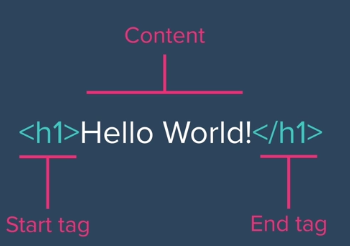
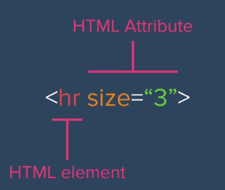

What is HTML?
HTML is the base framework (content and structure) of a website. It is possible to create websites that are just HTML, but not just CSS or Javascript.
HTML -> Hypertext Markup Language.
Hypertext -> Text documents that can be linked together using hyperlinks.
Markup -> Items are designated to certain rules. Things are marked up to show different things. This is done through HTML tags.
Tags
Tag Anatomy
The anatomy of an HTML tag often may look as follows, with a starting tag, and an ending tag.
Some others are self terminating, so they are structured like so -> < element>

Tags make requests to a browser to display text in a way that was designated.
Documentation Resources
Documentation is another part of tags, and you are able to find out more about documentation at the following sites.
Heading Tag < h#>< /h#>
The headings here get smaller as the numbers get larger.
h1 -> Largest Heading
h2 -> Second Largest Heading
h3
h4
h5
h6
Paragraph Tag < p>< /p>
P tags are paragraph tags. Items inside are grouped into the same paragraph.
Line Breaks < br>
Used to give some space. It is a self terminating tag, and works all by itself.
Horizontal Rules < hr>
Horizontal Rules are created to draw horizontal lines onto the page. It is a self terminating tag.
We are able to change the line size with the html attributes.
Center Tag < center>< /center>
This tag centers the text between it on the page.
Formatting Elements i, em, b, strong
HTML Formatting Elements
Used to emphasize the importance of text, these elements can be nested within other elements.
- i -> Italicizes Text. Used to indicate foreign text, character's thoughts, or when words are defined.
- em ->Emphasizes Text. Used when a word is important. When you want to make something italicized, use em.
- b -> Makes Text Bold.
- strong -> This text has a strong meaning. When you want to make something bold, use strong.
Images < img src="">
Images can be added to pages. Image elements are self-terminating, but do need to include img src. The src is a link to the source of the image, be it an online image or an image that is stored in the file structure.
- Online images -> You can find an image online and right click to copy the image address. This image address can then be used as the src of the image. However, this is hosted on another site's servers, so if the server goes down, there might not be an available image...
- Local images -> You must put an image into the website's file structure and link back to the image in the src.
- width -> Change how big the image is. It still sends the whole image, so compressing it in another software can be useful for saving storage and bandwidth
- alt -> This can provide an ALT text to the image, in the case that it fails to load. Give a meaningful description, and it can only benefit you. Also, there's an added bonus that search engines can use alt text and determine what kind of website you are...
- border ->
Linking using the a element < a href=""> Link Text < /a>
If you wanted to direct someone to a certain page, you can add a link using an anchor tag.
By the way, the convention is that links are blue if they haven't been clicked on, and purple if they have been.
Attributes include...
Ordered lists OL, Unordered Lists UL, and List Items LI
If you wanted to add in a list to a website, you could use either an ordered or an unordered list.
- ul -> Unordered List. The bread and butter of bulletpoints. Use this for bulleted list and when order doesn't matter.
- ol -> Ordered List. Use this when you want to have a numbered list. Let's say, for when you have to list when someone came in first, second, or third...
- li -> List item. use this when you have an item that you want to put onto the aformentioned lists.
By the way, you can nest lists, as in add a list into a list.
There are also some attributes that can be used on lists as well, such as an attribute to change the type of bullet or number that is used on the list.
Elements include...
- start -> Can be used to change where the counting starts for list items.
- type -> Can be used to turn numbers into roman numerals.
Tables < table> < tr> < td> < /td> < /tr> < /table>
Tables are formed using table rows and table data. To use a table, you must use tr to form a new row, and td to add a cell in the row. If you want more columns, you need more cells.
Tables means that our columns are structured together, and are aligned to the same space.
The main job of tables is to display data, but it can also be used to arrange elements on a website.
- table -> Table
- thead -> Table Head. Inside of the thead, we can create a row that contains th elements.
- tbody -> Table body
- tfoot -> Table Footer
- th -> Table Headers
- tr-> Table Rows. Using this makes one single row on the table, no styling.
- td -> Table Data. These are table cells. we place data that we want on the cell in this cell.
Sometimes we use table head and table body because we might want to isolate these specific parts of the code for different styling and functionality.
Example table
| TD in TH 1 |
TD in TH 2 |
| Row 1 Table data 1 |
Row 1 Table data 2 |
| Row 2 Table data 1 |
Row 2 Table data 2 |
Row 2 Table data 3 |
Tables also have a variety of attributes. However, many of them are deprecated, and tables should be styled using CSS instead.
These can be used to collect data from a user.
They need both HTML and functionality, which requires javascript.
- form -> Used to define what's in the form. Doesn't do anything alone, and requires a label and input.
- label -> This is a label for a form input.
- name -> all inputs need a name to be submitted.
- input -> self closing tag.
- textarea -> has rows and cols that you define for a user to be able to write a message inside.
- input type attributes-> changes the input depending on the attribute.
- text -> text input field
- checkbox -> checkbox
- button -> clickable button
- submit -> submit button
- Color -> Adds a color picker to the website.
- Password -> This adds an input to the form. When you type, the input appears as stars (*), or is masked.
- file -> allows someone to attach a file to the form
- date
- range
- email -> Includes validation for the user input, and ensures the email is in an email format.
- action -> What happens when you submit. By default, takes you back to the homepage.
- post-> What is typed in the form is transferred to us.
- Enctype -> The type of encoding the information will be sent in.
You must identify all of the name attributes.
Example form
HTML Attributes
We can change the way that elements look by using an attribute which gives information to the browser to modify the element. It comes after the element and is separated by a space.

Comments < !-- Comment goes here -->
This can be used to document something in the html that will not appear on the final site. However, it still appears inside the html file if one were to read the source. Avoid putting sensitive information here.
This is the framework that all websites tend to have. It contains elements such as Doctype, HTML, HEAD, BODY, And the closing tags for the corresponding elements.
The important thing here is to indent code properly so that it matches up with their corresponding tags. This makes it easier to organize and visualize the code.
- !DOCTYPE -> Historical Artifact. Tells the browser what type of document to expect
- HTML LANG -> What language the website is currently. This is important for users who use screenreaders to be able to listen to the site.
- HEAD -> Information about the website that is not displayed to the user. Mostly used for rendering.
- META Charaset -> used to say how a website is encoded. Useful for alternative characters
- VIEWPORT -> How to display the website when it opens.
- TITLE-> Shows in the browser tab to say what the title of the website is.
- BODY -> This is the main content of the page.
There are several shortcuts to generate the code. In VSCode, you can type !. In Sublime, you can use < html>.